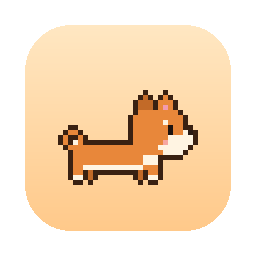

Tasks become treats
Every task in the Reminders lists you pick is a treat in the bowl. The pet fetches the most urgent one and carries it around the bottom of your screen.

TreatlyTreatly is a tiny pixel pet that lives on your Mac desktop. It fetches your Apple Reminders from its bowl, carries them around and nags louder and louder until you get them done.
brew install --cask tailamphat/tap/treatly
Free and open source. macOS 14 Sonoma or later.
Every task in the Reminders lists you pick is a treat in the bowl. The pet fetches the most urgent one and carries it around the bottom of your screen.
Ignore it and the pet drops the treat in front of you, then yells, then whines. It comes in bursts with roaming breaks, faster the more overdue the task is.
Click the pet and choose Done. It eats the treat, the task is completed in Reminders, and it leaves a little present that cleans itself up.
Not now? Snooze for 10 minutes or an hour and the pet buries the treat. It will dig it back up later.
Each one has its own walk speed, energy, sleepiness, patience and things to say. Click one to try it above.
brew install --cask tailamphat/tap/treatly
Get Treatly-<version>.zip from Releases, unzip it and move Treatly to Applications.
First launch: Treatly isn't notarized yet, so macOS may say it can't verify the app. Open System Settings > Privacy & Security and click Open Anyway next to Treatly. Then allow Reminders access, and look for the paw in the menu bar.